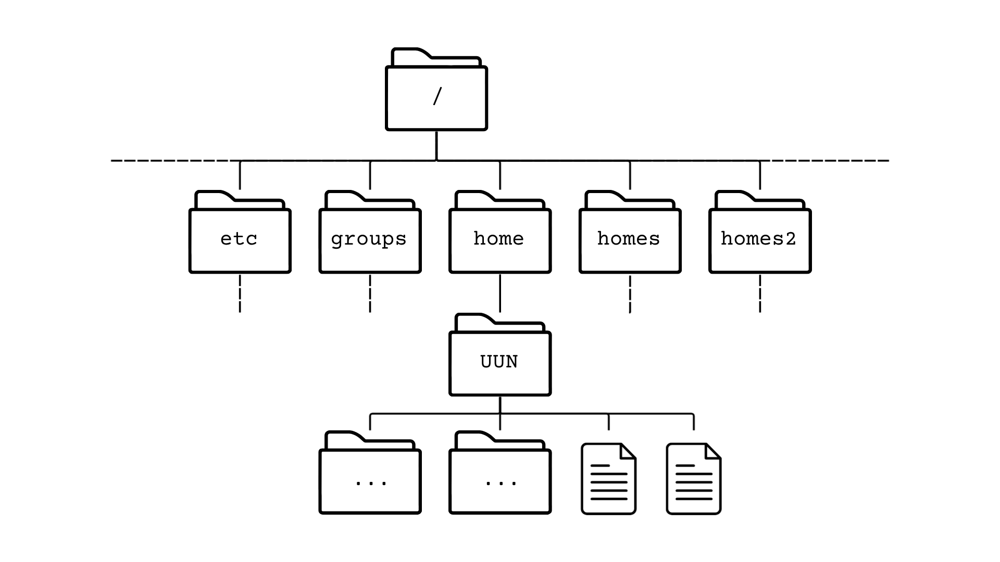

Exploring the Filesystem
System structure
Before we get to work with Linux, it is good to know how the system is structured. Files on Linux are grouped into directories (also called folders, similar to Windows and Mac). The directories are structured in a tree structure. This means directories are within other directories, creating a complex hierarchical tree like structure. At the base of it all is the root directory, which is indicated with “/”. This directory holds everything. It can contain files and subdirectories. Each subdirectory in turn can contain other files and subdirectories, and those can contain files and subdirectories, and so on.
An example of the file system is shown below.
User directories are usually stored in the /home directory and named after each user. UUN in the figure below should be replaced with your own UUN to find your own home directory.

It is vital to understand that you always work within a specific directory and any commands you run will be run in the context of that specific directory.
There are a few special characters, when working within the file system, that refer to specific folders. The table below gives an overview of the special characters that can be used to browse the tree.
| Character | Meaning |
|---|---|
| / | root directory |
| ~ | home directory |
| . | current directory |
| .. | parent directory |
With the knowledge of what the tree looks like and the use of special characters, we should be able to find our files. To identify any file or directory we need to determine its path. The path is the route to the file or directory starting from a directory. Paths are written as the list of directory names separated by a forward slash.
For example /home/johndoe/mouse_genome.fa links to a file named mouse_genome in the home folder belonging to johndoe. When referring to files starting from the root directory, we call these paths absolute paths. This means that no matter where you are in the filesystem, the path will always refer to the same file.
We can also use relative paths, which are paths that start from the current working directory. For example, if we are currently in the home directory of user johndoe, we can refer to the same file simply as mouse_genome.fa. Relative paths are generally shorter and easier to type, but they are dependent on the current working directory.
A user logged in as janedoe would have a different home directory under /home/janedoe, and the relative path mouse_genome.fa would only work if they also had a file named mouse_genome.fa in their home directory. Still, they would be working with a different file from johndoe. To access the same file as johndoe, janedoe would need to use the absolute path /home/johndoe/mouse_genome.fa, or a relative path ../johndoe/mouse_genome.fa.
If you are ever in doubt, use the absolute path (start the path from the root).
Key points
There are several best practices for choosing good file and directory names.
- Everthing in Linux is case sensitive. If in doubt, stick to lower case.
The filenamemyfileis not the same asMyFile,Myfile, ormyFile. This is also the case for any commands we work with. - File and directory names should only contain letters, numbers, hyphens, underscores and full stops
- File and directory names should not contain any spaces
In contrast to graphical environments, the command line interface can become cumbersome whenever our file or directory names contain spaces or special characters. For example, the shell will consider my file to be two files, i.e. “my” and “file”. If you have files containing spaces or special characters and you want to use them within Linux, you will need to enclose the full filename in quotation marks or you will need to escape spaces and special characters with a backslash. This makes sure that the shell understands it is part of the filename: "my file" or my\ file
To make our life easier, it is best to avoid spaces and unusual characters all together.
Whenever we first start a shell on a Linux system, your working or current directory will be your home directory. On most Linux systems your home directory will be called /home/username.
Unless we reference the path, Linux will look for a file in the current working directory. If we ever want to check what the current working directory is, we can use the command pwd which stands for present working directory.
pwdChallenge 1:
What is your current working directory?
Solution
Solution.
Solution:
Run pwd, and look at which directory you are in. Check if your username is your UUN.
Files and Folders
We are going to play with files and directories and take a look at how to browse them and refer to them. To look at which files and subdirectories we have within our folder, we can use the ls (list) command.
lsIt might be that there are currently no files within your directory. Just to have some files to play with, we will copy them from a central location on the DRP-HCB Bioinformatics server. For this we will use the cp (copy) command.
cp -r /library/training/Intro_to_Linux ./NOTE: if you are working from your own server or system, download the data as followed and unpack it. You do NOT need to run the following if you are working on the DRP-HCB Bioinformatics server. Don’t worry about the messages you get on screen, we will talk about these later on.
wget https://bifx-core3.bio.ed.ac.uk/~hdeweer/Intro_to_Linux.tar.gz
tar -xzvf Intro_to_Linux.tar.gzIf we take a look again at what is in our folders, we will now see that a folder has been added called Intro_to_Linux.
lsIf we want to know what is inside the folder, we can use ls again and use an argument to specify the folder that we want to explore.
ls Intro_to_LinuxThe folder is in our home directory, which means the ls command has run in the current location. We can use absolute paths as well.
Replace <UUN> by your own UUN or username.
ls /home/<UUN>/Intro_to_LinuxWe can also use the ~ shortcut to reference our home directory.
ls ~/Intro_to_LinuxThe last 3 commands all have the same results, which should show us the content of the folder Intro_to_Linux.
As mentioned before, Linux has difficulties with spaces in names. There is one directory in our Intro_to_Linux directory that contains spaces. When Linux reports files or directories that contain special characters, it will put quotes around the name to indicate there is something about the name which is outside the general rules. Before we get into how to deal with files and directories with spaces, lets look at how to navigate the system.
Exercises
Below are a number of exercises designed to explore the filesystem.
Exercise 1:
Navigate back to your home directory. List the contents of the Intro_to_Linux directory without moving into it.
Solution
Solution.
Solution:
We do not have to move folders to be able to see the content of a folder. Using ls we can specify the folder we want to look at.
cd ~
ls Intro_to_LinuxExercise 2:
Navigate to the Intro_to_Linux directory.
List the contents of your home folder without moving directory.
Solution
Solution.
Solution:
We do not have to move folders to be able to see the content of a folder. Using ls we can specify which folder we want to look at.
cd Intro_to_Linux
ls ../Exercise 3:
Using --help, learn how the options -a and -l affect the ls command.
Solution
Solution.
Solution:
Run ls with the --help option. Take a look at -a.
ls --helpIf we use the -a option when running ls, we do not ignore entries starting with ..
A good folder to try this on is the home folder.
ls ~
ls -a ~Do you see the differences in files reported? Files beginning with . are known as hidden files. These are generally configuration files or files used by the operating system.
If we use the -l option when running ls, the output is in long mode. This gives extra information about files and folders, like their size, access permissions and when they were last modified.
ls -l ~Exercise 4:
List the contents of the genomes folder within the Intro_to_Linux folder using its absolute path.
Solution
Solution.
Solution:
Remember that the absolute path starts from the root /
Replace the
ls /home/<UUN>/Intro_to_Linux/genomesExercise 5:
Write the relative path in two different ways from you current location for the genomes folder within the Intro_to_Linux folder.
Solution
Solution.
Solution:
Because we should currently be in the Intro_to_Linux folder, the following should work.
ls ~/Intro_to_Linux/genomes
ls genomes